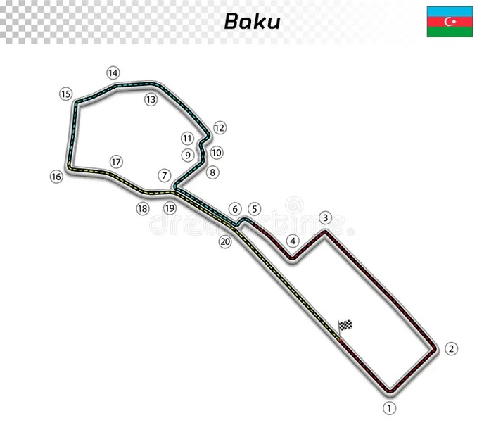

Introducción
Se unió al calendario en 2016. El diseño es conocido por su contraste radical, ya que combina un diseño urbano con una de las rectas más largas de la F1.
Notas Clave de la Pista
Presenta un gran desafío de configuración. La recta principal permite velocidades punta altísimas, mientras que el tramo de la Curva del Castillo es extremadamente estrecho y lento, requiriendo un set-up de equilibrio entre agarre y velocidad.
Tipo de Pista
Es un circuito semiurbano. El trazado es plano, con secciones lentas en la ciudad vieja y secciones ultra-rápidas en el paseo marítimo.
⬅ Volver a Circuitos